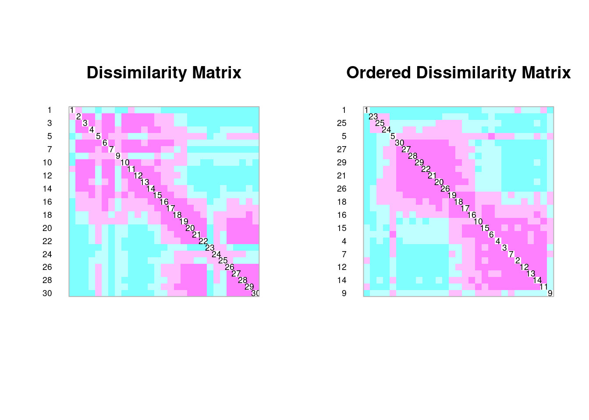

Medidas de Associação
Felipe Melo
03/03/2021
Medidas de associação
Slides
Na ecologia usamos muitas medidas que fazem uma ligação entre pares de dados. Esses pares de dados podem ser espécies, ou locais de coleta. Há uma enorme variedade de métricas que vão nos oferecer uma medida de associação entre pares. Essas medidas são reportadas na forma de índices ou métricas que têm naturezas distintas, mas todas tem a particularidade de gerar uma matriz quadrada e simétrica de dimensões n x n quando se comparam objetos ou p x p quando se comparam variáveis (as letras são conveções). Essas matrizes de assossiação serão criadas e facilmente pelas análises, mas o pesquisador aqui tem um papel fundamental: escolher as métricas
Q mode & R mode
Como de constume, vamos seguir nessa disciplina o roteiro proposto pelo livro texto Numerical Ecology with R.
Novamente, isso é uma convenção para distinguir as comparações entre objetos Q-mode ou variáveis R-mode. As comparações entre objetos são geralmente feitas através de medidas de distância enquanto as comparações entre variáveis são realizadas com medidas de dependência.
O problema dos zeros
Todas as matrizes de dados ecológicos costumam ter zeros. Esses podem ser naturais (observações) ou simplesmente ausências de dados. Mas precisamos ter ideia de quão importantes são os zeros. No livro Numerical Ecology o exemplo dado para que entendamos os papel dos zeros em matrizes ecológicas é claro. Quando zeros são resultados de mediação de uma vairável, como concentroação de Oxigênio, a interpretação é clara, sem oxigênio, sem vida aeróbica e portanto zero frequência de vida aeróbica nessas condições é esperado. Agora, que tal se obtemos zeros em concetrações intermediárias de qualquer variável ambiental? As epécies não ocorrem aí porque tem pouco ou muito oxigênio? Note que aí temos uma interpretação diferente para cada situação. Ainda, em ambos casos a informção de ausência ou presença tem um significado ecológico, mas não sabemos as causas das ausências.

Note que as amostras A, B e C não capturaram a espécie cuja presença/abundância está representada pela linha vermelha. Portano, se essa for a única diferença entre as amostras A, B e C, os índices que não são sensíveis a este problema, não caprutam essa diferenaça e consideram que a similaridade entre A e B é igual a A e C ou B E C. Mas não é. VOcê poderia dizer porque?
praticando…
Uma boa maneira é checar se há zeros provenientes de valores vazios ou NA
load("/home/felipe/Google Drive/github/eco_numerica/data/NEwR-2ed_code_data/NEwR2-Data/Doubs.RData")
head(is.na(spe))## Cogo Satr Phph Babl Thth Teso Chna Pato Lele Sqce Baba Albi Gogo
## 1 FALSE FALSE FALSE FALSE FALSE FALSE FALSE FALSE FALSE FALSE FALSE FALSE FALSE
## 2 FALSE FALSE FALSE FALSE FALSE FALSE FALSE FALSE FALSE FALSE FALSE FALSE FALSE
## 3 FALSE FALSE FALSE FALSE FALSE FALSE FALSE FALSE FALSE FALSE FALSE FALSE FALSE
## 4 FALSE FALSE FALSE FALSE FALSE FALSE FALSE FALSE FALSE FALSE FALSE FALSE FALSE
## 5 FALSE FALSE FALSE FALSE FALSE FALSE FALSE FALSE FALSE FALSE FALSE FALSE FALSE
## 6 FALSE FALSE FALSE FALSE FALSE FALSE FALSE FALSE FALSE FALSE FALSE FALSE FALSE
## Eslu Pefl Rham Legi Scer Cyca Titi Abbr Icme Gyce Ruru Blbj Alal
## 1 FALSE FALSE FALSE FALSE FALSE FALSE FALSE FALSE FALSE FALSE FALSE FALSE FALSE
## 2 FALSE FALSE FALSE FALSE FALSE FALSE FALSE FALSE FALSE FALSE FALSE FALSE FALSE
## 3 FALSE FALSE FALSE FALSE FALSE FALSE FALSE FALSE FALSE FALSE FALSE FALSE FALSE
## 4 FALSE FALSE FALSE FALSE FALSE FALSE FALSE FALSE FALSE FALSE FALSE FALSE FALSE
## 5 FALSE FALSE FALSE FALSE FALSE FALSE FALSE FALSE FALSE FALSE FALSE FALSE FALSE
## 6 FALSE FALSE FALSE FALSE FALSE FALSE FALSE FALSE FALSE FALSE FALSE FALSE FALSE
## Anan
## 1 FALSE
## 2 FALSE
## 3 FALSE
## 4 FALSE
## 5 FALSE
## 6 FALSESe os dados fossem realmente NAs então teríamos uma matriz um pouco diferente…
spe_na <- replace(spe, spe == 0, NA) # Mudei zeros por NAs
head(is.na(spe_na))## Cogo Satr Phph Babl Thth Teso Chna Pato Lele Sqce Baba Albi Gogo Eslu
## 1 TRUE FALSE TRUE TRUE TRUE TRUE TRUE TRUE TRUE TRUE TRUE TRUE TRUE TRUE
## 2 TRUE FALSE FALSE FALSE TRUE TRUE TRUE TRUE TRUE TRUE TRUE TRUE TRUE TRUE
## 3 TRUE FALSE FALSE FALSE TRUE TRUE TRUE TRUE TRUE TRUE TRUE TRUE TRUE FALSE
## 4 TRUE FALSE FALSE FALSE TRUE TRUE TRUE TRUE TRUE FALSE TRUE TRUE FALSE FALSE
## 5 TRUE FALSE FALSE FALSE TRUE TRUE TRUE TRUE FALSE FALSE TRUE TRUE FALSE FALSE
## 6 TRUE FALSE FALSE FALSE TRUE TRUE TRUE TRUE FALSE FALSE TRUE TRUE FALSE FALSE
## Pefl Rham Legi Scer Cyca Titi Abbr Icme Gyce Ruru Blbj Alal Anan
## 1 TRUE TRUE TRUE TRUE TRUE TRUE TRUE TRUE TRUE TRUE TRUE TRUE TRUE
## 2 TRUE TRUE TRUE TRUE TRUE TRUE TRUE TRUE TRUE TRUE TRUE TRUE TRUE
## 3 TRUE TRUE TRUE TRUE TRUE TRUE TRUE TRUE TRUE TRUE TRUE TRUE TRUE
## 4 FALSE TRUE TRUE TRUE TRUE FALSE TRUE TRUE TRUE TRUE TRUE TRUE TRUE
## 5 FALSE TRUE TRUE FALSE TRUE FALSE TRUE TRUE TRUE FALSE TRUE TRUE TRUE
## 6 FALSE TRUE TRUE TRUE TRUE FALSE TRUE TRUE TRUE FALSE TRUE TRUE TRUENesse caso até um gráfico pode nos ajudar a ter uma dimensão da importância dos zeros NAs
image(as.matrix(spe_na))Os valores em branco são os NAs e as cores indicam as abundâncias, sendo quanto mais vermelho, mais abundante.
Perguntas para se ter em mente
- Você está comparando espécies (Q-mode) ou veriáveis ambientais (R-mode)?
- Seus dados são binários (presenças e ausências), quantitativos (medidas contínuas) ou mistos (coeficientes, categorias não binárias)?
Comparando comunidades com dados de abundância (Q-mode)
Vamos continuar usando os dados do livro Numerical Ecology with R para nossos exemplos, mas vamos mudar algumas funções de visualização.
Vamos usar os dados das espécies de peixes que já conhecemos
spe # base dos peixes da SuiçaEsses dados são quantitativos e as abundâncias variam de zero a 5 indivíduos. Como temos muitas espécies e muitas espécies raras, a escolha inicial dos índices é da família que consideramos *_assimétrica*_ como o Bray-Curtis, que pode ser calculado diretamente nas abundâncias ou na base de dados transformada via funções que reduzem a diferença entre as abundâncias de espécies dominantes e raras.
só precisa fazer uma vez, depois não mais.
# Remove empty site 8
spe <- spe[-8, ]
env <- env[-8, ]
spa <- spa[-8, ]Agora vamos comparar as medidas de dissimilaridade aplicadas
spe.db <- vegdist(spe) # method = "bray" (default)
head(spe.db)## [1] 0.6000000 0.6842105 0.7500000 0.8918919 0.7500000 0.6842105# on log-transformed abundances
spe.dbln <- vegdist(log1p(spe))
head(spe.dbln)## [1] 0.5509095 0.6280761 0.7446012 0.8664653 0.7657643 0.6519273# Chord distance matrix
spe.norm <- decostand(spe, "nor")
spe.dc <- dist(spe.norm)
head(spe.dc)## [1] 0.7653669 0.9235374 1.0432236 1.2786132 1.1153793 0.8873116# Hellinger distance matrix
spe.hel <- decostand(spe, "hel")
spe.dh <- dist(spe.hel) # Hellinger is the default distance
head(spe.dh)## [1] 0.8420247 0.9391305 1.0616631 1.2308244 1.1153793 0.9391305Exercício Q-Mode
Tente fazer uma representação gráfica de cada uma dessas matrizes com os diferentes índices e compará-la
Escreva emaicxo seus códigos e interprete os resultados escrevendo embaixo
coldiss(spe.db, diag = TRUE)
coldiss(spe.dh, diag = TRUE)
Comparando comunidades com dados binários (Q-mode)
Há muitas ocasiões em que temos apenas dados de presença ou ausência das espécies que estudamos. Isso é muito comum para grupos biológicos onde as abundâncias não podem ser medidas com precisão, como briófitas ou grandes mamíferos. Os dados de presença e ausência também podem ser “gerados”, covnertendo à partir das abundâncias. Há perguntas especpíficas e áreas de conhecimento como a Biogeografia, onde a presença/ausência pode ser mais informativa que as abundâncias. Esses dados são geralmente tratados com índices em vez de medidas distância porque justamente, eles não cumprem com os pré-requisitos para serem considerados simétricos.
 fig by David Zelený
fig by David Zelený
Prós e contras de dados de abundância e presença e ausência
- Dados de abundância podem se transformados em presença/ausência. Não o contrário
- Abundâncias são informações valiosas para muuuuitas análises ecológicas. Sempre procure coletar abundâncias.
- Abundância traz pelos menos duas informações ecológicas importantes:
- A óbvia ocorrência ou não de uma espécie num determinado gradiente ambiental, e;
- O grau de adaptabilidade (fitness) que essa espécie possui. Quanto mais abundante, melhor o habitat para ela, em tese.
- A abundância também informa sobre as interações bióticas, que provavelmente favorecem espécies abundantes.
- A ocorrência é mito poderosa para testar limitação de dispesão de espécies, ou seja, a probabilidade de encontrar espécies ao longo de uma paisagem ou gradiente ambiental.
- As ocorrências são poderosas para testar relações com gradientes ambientais em análises do tipo “unconstrained”, que não vamos abordar muito nessa disciplina mas que eventualmente podemos precisar.
Exemplos da literatura

Homogeneização da Mata Atlântica
Neste trabalho de Lobo et al (2011) mostramos como a Mata Atlântica vem sofrendo com o processod e homogeneização biótica decorrente da perturbação antrópica. Testamos isso justamente com uma matriz de similaridade de espécies qque agrupamos em 12 tipos de fitofisionomias e em dois períodos de tempo (prá-1980 e pós-1980). Nossos dados eram apenas de presença e ausência em localidades de coleta, através de dados de herbário. Dê uma olhada no artigo e veja como dados de ocorrência foram usados.
 Neste artigo Scholar et al (2016) mostram como o domínio conceitua da beta-diversidade é importante para pensar e planejar a conservação da biodiversidade. Aqui não te nada de índices nem medidas mas conceitos. Esses conceitos dão sentido às perguntas que fazemos na ciência e ajudam a escolher as melhores métricas.
Neste artigo Scholar et al (2016) mostram como o domínio conceitua da beta-diversidade é importante para pensar e planejar a conservação da biodiversidade. Aqui não te nada de índices nem medidas mas conceitos. Esses conceitos dão sentido às perguntas que fazemos na ciência e ajudam a escolher as melhores métricas.
Os desdrobamentos dos conceitos e aplicações da beta-diversidade são fundamentais para uma correta aplicação das métricas de assossiação. Índices de similaridade e medidas de distância são maneiras de quantificar diversidade beta entre comunidades biológicas.
Q mode para dados ambientais
As vairáveis ambientais env são dados contínuos que não possuem “problema” dos duplos zeros. Potanto, as medidas de distância são perfeitamente aplicáveis a elas. Dessas, a distância euclidiana, que á a distãncia entre dois pontos medida pela clássica fórmula de Pitágoras, é a medida de escolha inicial.
env2<- env[,-1] # remover 'dfs' que é uma variável espacial, não ambiental
env.de<-dist(scale(env2)) # use a função "scale" para transformar osdados em z-scores, já que dados de magnitude muito diferentes podem criar disorções no cálculo de distâncias.
corrplot(as.matrix(env.de), is.corr = FALSE) Lembrem-se que nessa matriz, os números são as amostras, que começam em 1 na nascente do rio e terminam em 30 no ponto mais distante. Conseguem ver algum padrão? tentem entender a matriz, dê exemplos de pontos muitos parecidos e outros muito dissimilares. Será que você está lendo a matriz corretamente?
Distâncias geográficas
spa.de<-dist(spa)
coldiss(spa.de, diag = TRUE)dfs.df<-as.data.frame(env$dfs, row.names = rownames(env))
riv.de<-dist(dfs.df)
coldiss(riv.de, diag = TRUE)R mode para dados ambientais ou espécies
A lógica aqui é saber quais variáveis ou espécies estão correlacionadas e não o quão similar cada par de site ou espécies pode ser. Nesse caso, usamos basicamente testes de correlação ou covariança. Essa informação é poderosa, pois pode tanto expressar gradientes ambientais complexos (várias variáveis ambientais se comportnaod de maneira similar) ou a co-ocorrência de espécies. Vejamos:
Variáveis ambientais
cor.env<-cor(env2)
coldiss(cor.env, diag = T)Consegue ideintificar grupos de variáveis ambientais que covariam?
Espécies que covariam
spe.t <- t(spe)
# Chi-square pre-transformation followed by Euclidean distance
spe.t.chi <- decostand(spe.t, "chi.square")
spe.t.D16 <- dist(spe.t.chi)
coldiss(spe.t.D16, diag = TRUE)Consegue identificar grupos de espécies?
Em resumo…
Tabela de decisão para uso de medidas de similaridade
Exercício sobre Medidas de associação
As bases de dados do livro Numerical Ecology estão compostas por três matrizes, uma de espécies “spe”, outra de variáveis ambientais “env” e outra de variáveis geográficas “spa”. Agora que sabemos que as medidas de associação servem para medir a similaridade entre “objetos” que podem ser de qualquer natureza, vamos fazer alguns exerícios.
Aqui vou demonstrar através de uma pergunta simples, como explorar as medidas de similaridade de modo a obter das bases de dados ecológicos algumas informações importantes para compreender a estrutura de comunidades biológicas e os processos que às mantêm.
Nesse caso, vou dividir o rio em três seções: “alto”, “médio” e “baixo”. As amostras de 1 a 10 serão o “alto rio”; as de 11-20 serão o “médio rio” e as de 21-30 serão o “baixo rio”. Para isso, vou acrescentar uma coluna com essa informação à bases de dados
Pergunta 1 - Qual a similaridade entre as comunidades de peixes do alto, médio e baixo curso de rio?
método 1) Usando índices de similaridade
jacc_dist<-vegdist(spe[,-28], method = "jaccard") # retirei somente a coluna "rio" porque a função só lê variáveis numéricas
jacc_dist # Dê uma olhada na matriz, note que os valores estão entre 0 e 1 como previsto## 1 2 3 4 5 6 7
## 2 0.7500000
## 3 0.8125000 0.2500000
## 4 0.8571429 0.5000000 0.3181818
## 5 0.9428571 0.8205128 0.8095238 0.6585366
## 6 0.8571429 0.5652174 0.4583333 0.3200000 0.5897436
## 7 0.8125000 0.2500000 0.2222222 0.3913043 0.7804878 0.3913043
## 9 1.0000000 0.8181818 0.8461538 0.7931034 0.7368421 0.7037037 0.8000000
## 10 0.9375000 0.5555556 0.5714286 0.5416667 0.7027027 0.4090909 0.4210526
## 11 0.7272727 0.4666667 0.5789474 0.6086957 0.8157895 0.6086957 0.5000000
## 12 0.8333333 0.3333333 0.3809524 0.5000000 0.8181818 0.5555556 0.3000000
## 13 0.8421053 0.4500000 0.4782609 0.6206897 0.8478261 0.7096774 0.5416667
## 14 0.8928571 0.5714286 0.4827586 0.5151515 0.8076923 0.6000000 0.5333333
## 15 0.9090909 0.6764706 0.6388889 0.5789474 0.7115385 0.5405405 0.5588235
## 16 0.9250000 0.7906977 0.7272727 0.6444444 0.6296296 0.5476190 0.6976744
## 17 0.9555556 0.8085106 0.7755102 0.6734694 0.6779661 0.6170213 0.7500000
## 18 0.9772727 0.8510638 0.8400000 0.7400000 0.6666667 0.6875000 0.8163265
## 19 1.0000000 0.8846154 0.8301887 0.7592593 0.6666667 0.6862745 0.8076923
## 20 1.0000000 0.9538462 0.9411765 0.8507463 0.6567164 0.8153846 0.9253731
## 21 1.0000000 0.9722222 0.9600000 0.8783784 0.6666667 0.8472222 0.9459459
## 22 1.0000000 0.9879518 0.9767442 0.9058824 0.6913580 0.8795181 0.9647059
## 23 1.0000000 1.0000000 1.0000000 0.9583333 0.9444444 0.9130435 0.9473684
## 24 1.0000000 1.0000000 1.0000000 0.9411765 0.8863636 0.8750000 0.9666667
## 25 1.0000000 1.0000000 0.9615385 0.8965517 0.8157895 0.8148148 0.9200000
## 26 1.0000000 0.9814815 0.9649123 0.8771930 0.7166667 0.8148148 0.9464286
## 27 1.0000000 0.9864865 0.9740260 0.9090909 0.7236842 0.8648649 0.9605263
## 28 1.0000000 0.9876543 0.9761905 0.9036145 0.7317073 0.8765432 0.9638554
## 29 0.9887640 0.9687500 0.9595960 0.8979592 0.6989247 0.8750000 0.9489796
## 30 1.0000000 1.0000000 0.9903846 0.9320388 0.7448980 0.9108911 0.9805825
## 9 10 11 12 13 14 15
## 2
## 3
## 4
## 5
## 6
## 7
## 9
## 10 0.7272727
## 11 0.8636364 0.6111111
## 12 0.8148148 0.5454545 0.3888889
## 13 0.9000000 0.7307692 0.5000000 0.3181818
## 14 0.8648649 0.6451613 0.6071429 0.3571429 0.3214286
## 15 0.7948718 0.5757576 0.6666667 0.5000000 0.5555556 0.3947368
## 16 0.8260870 0.6829268 0.7857143 0.7111111 0.7446809 0.6122449 0.4130435
## 17 0.8163265 0.6818182 0.7777778 0.7346939 0.7647059 0.6666667 0.5740741
## 18 0.7826087 0.7272727 0.8222222 0.8000000 0.8269231 0.7500000 0.6363636
## 19 0.8000000 0.7755102 0.9038462 0.8571429 0.8983051 0.8064516 0.7258065
## 20 0.8135593 0.8709677 0.9531250 0.9428571 0.9583333 0.9090909 0.8289474
## 21 0.8656716 0.8985507 0.9571429 0.9610390 0.9746835 0.9285714 0.8690476
## 22 0.8684211 0.9250000 0.9753086 0.9772727 0.9888889 0.9473684 0.8709677
## 23 0.8750000 0.9411765 0.9285714 0.9523810 1.0000000 0.9677419 0.9722222
## 24 0.8400000 0.8846154 0.9600000 0.9687500 1.0000000 0.9512195 0.9333333
## 25 0.9130435 0.8636364 0.9523810 0.9642857 1.0000000 0.9166667 0.9000000
## 26 0.8367347 0.9038462 0.9615385 0.9661017 0.9836066 0.9242424 0.8656716
## 27 0.8676471 0.9154930 0.9722222 0.9746835 0.9876543 0.9418605 0.8705882
## 28 0.8648649 0.9230769 0.9746835 0.9767442 0.9886364 0.9462366 0.8804348
## 29 0.8777778 0.9139785 0.9462366 0.9500000 0.9504950 0.9150943 0.8461538
## 30 0.9157895 0.9489796 0.9898990 0.9905660 1.0000000 0.9646018 0.9009009
## 16 17 18 19 20 21 22
## 2
## 3
## 4
## 5
## 6
## 7
## 9
## 10
## 11
## 12
## 13
## 14
## 15
## 16
## 17 0.4150943
## 18 0.5090909 0.2448980
## 19 0.5666667 0.4745763 0.4000000
## 20 0.7368421 0.5915493 0.4923077 0.3809524
## 21 0.7710843 0.6582278 0.5753425 0.4571429 0.1846154
## 22 0.7956989 0.7111111 0.6428571 0.5609756 0.3157895 0.1891892
## 23 0.9523810 0.9090909 0.9047619 0.9130435 0.9285714 0.9354839 0.9444444
## 24 0.9000000 0.8200000 0.7872340 0.7800000 0.7321429 0.7580645 0.7916667
## 25 0.8666667 0.8541667 0.7954545 0.7608696 0.8035714 0.8225806 0.8472222
## 26 0.7794118 0.7014925 0.6290323 0.4915254 0.3500000 0.3333333 0.4027778
## 27 0.8023256 0.7261905 0.6538462 0.5466667 0.3239437 0.2394366 0.2236842
## 28 0.8172043 0.7333333 0.6666667 0.5853659 0.3636364 0.2857143 0.2250000
## 29 0.7904762 0.6767677 0.6129032 0.5851064 0.3932584 0.3068182 0.2134831
## 30 0.8378378 0.7333333 0.6900000 0.6500000 0.4574468 0.3763441 0.3052632
## 23 24 25 26 27 28 29
## 2
## 3
## 4
## 5
## 6
## 7
## 9
## 10
## 11
## 12
## 13
## 14
## 15
## 16
## 17
## 18
## 19
## 20
## 21
## 22
## 23
## 24 0.7333333
## 25 0.6363636 0.6315789
## 26 0.9069767 0.6511628 0.7441860
## 27 0.9365079 0.7619048 0.8253968 0.3174603
## 28 0.9428571 0.7857143 0.8428571 0.3857143 0.1780822
## 29 0.9540230 0.8275862 0.8735632 0.5057471 0.3146067 0.2555556
## 30 0.9550562 0.8314607 0.8764045 0.5333333 0.3296703 0.2717391 0.2574257Bom, uma maatriz desse tamanho e con tantas cálulas é difícil de usar para responder a nossa pergunta… mas podemos dar um jeito nisso.
mean(jacc_dist) # Esse é o valor médio da similaridade de jaccard entre todas as combinações possíveis## [1] 0.7540221library(usedist)
mean(dist_subset(jacc_dist, c(1:8))) # vai pegar as primeiras 9 linhas da matriz e calcular a similaridade média. Isso equivale a similaridade de alto rio## [1] 0.6448391mean(dist_subset(jacc_dist, c(9:18))) # Agora para o médio rio## [1] 0.6223917mean(dist_subset(jacc_dist, c(19:28))) # Agora para o baixo rio## [1] 0.5761246Alguma diferença? Dá pra ver assim no olhômetro?
Talvez a melhor maneira de visualizar esses pontos seja fazendo um dendograma
clust_rio<-hclust(jacc_dist, method = "complete")
clust_graf<-plot(clust_rio, hang=-1)clust_graf## NULLMas não cosigo ver se os grupos que atribui de alto, médio e baixo rio realmente agrupam as espécies.
require(dendextend) # Esse pacote é necessário para colorir as potnas dos ramos do dendograma## Loading required package: dendextend## Registered S3 method overwritten by 'dendextend':
## method from
## rev.hclust vegan##
## ---------------------
## Welcome to dendextend version 1.13.4
## Type citation('dendextend') for how to cite the package.
##
## Type browseVignettes(package = 'dendextend') for the package vignette.
## The github page is: https://github.com/talgalili/dendextend/
##
## Suggestions and bug-reports can be submitted at: https://github.com/talgalili/dendextend/issues
## Or contact: <tal.galili@gmail.com>
##
## To suppress this message use: suppressPackageStartupMessages(library(dendextend))
## ---------------------##
## Attaching package: 'dendextend'## The following objects are masked from 'package:ape':
##
## ladderize, rotate## The following object is masked from 'package:gclus':
##
## order.hclust## The following object is masked from 'package:permute':
##
## shuffle## The following object is masked from 'package:stats':
##
## cutreeclust_rio2<-as.dendrogram(clust_rio)
colors<-c("#E69F00","#56B4E9", "#009E73")
colorCode<-c(alto=colors[1], medio=colors[2], baixo=colors[3])
labels_colors(clust_rio2) <- colorCode[rio][order.dendrogram(clust_rio2)]Agora podemos plotar o dendograma onde: números amarelos são do alto rio, azuis do médio rio e pretos do baixo rio.
plot(clust_rio2)Temos padrão?